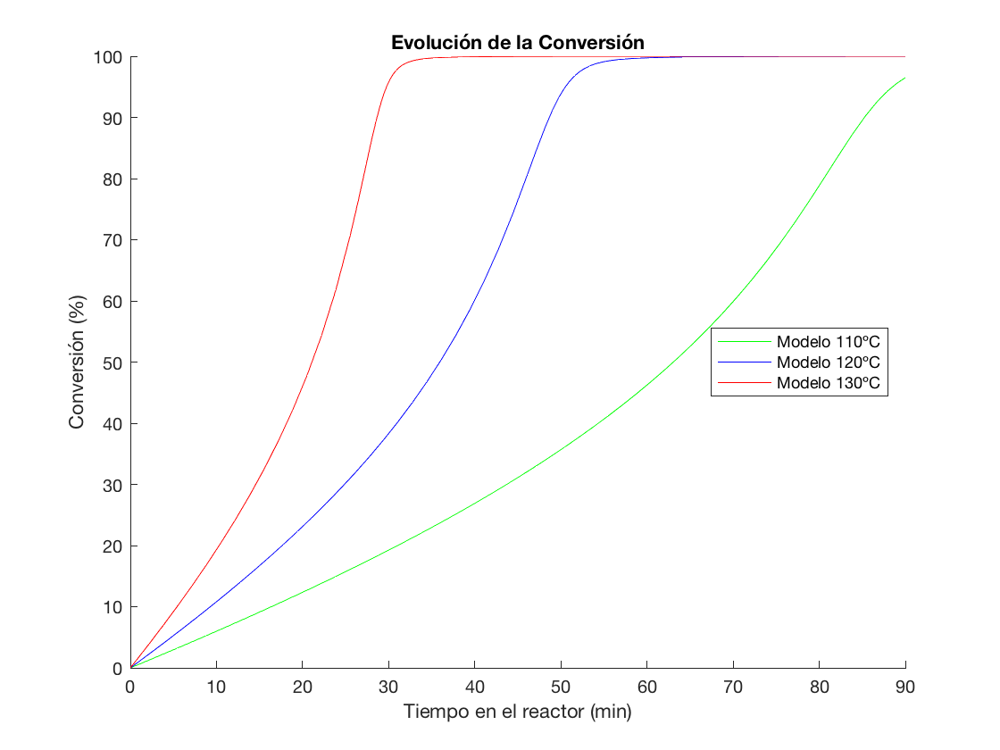

global tiempo
global Rjul
global T1
global T2
global T3
global Mo
global I3o
to = 0;
tf = 5400;
tiempo = [to tf];
step = 100;
inicial = zeros(1, 7);
inicial(1) = I3o;
inicial(2) = Mo;
[t1,x1] = ode23s(@(t,x)sistemaDinamico110(t,x), tiempo, inicial, odeset('Maxstep', step));
[t2,x2] = ode23s(@(t,x)sistemaDinamico120(t,x), tiempo, inicial, odeset('Maxstep', step));
[t3,x3] = ode23s(@(t,x)sistemaDinamico130(t,x), tiempo, inicial, odeset('Maxstep', step));
k110 = constantes(0, T1, Rjul, 0, 0);
kp110 = k110(4);
monomero110 = x1(:,2);
polimero110 = x1(:,6);
PeP110 = x1(:,7);
conversion110 = (Mo - monomero110(:))/Mo;
rad110 = x1(:,4);
rads110 = x1(:,5);
radicales110 = rad110 + 2.*rads110;
rp110 = kp110 .* monomero110 .* radicales110;
k120 = constantes(0, T2, Rjul, 0, 0);
kp120 = k120(4);
monomero120 = x2(:,2);
polimero120 = x2(:,6);
PeP120 = x2(:,7);
conversion120 = (Mo - monomero120(:))/Mo;
rad120 = x2(:,4);
rads120 = x2(:,5);
radicales120 = rad120 + 2.*rads120;
rp120 = kp120 .* monomero120 .* radicales120;
k130 = constantes(0, T3, Rjul, 0, 0);
kp130 = k130(4);
monomero130 = x3(:,2);
polimero130 = x3(:,6);
PeP130 = x3(:,7);
conversion130 = (Mo - monomero130(:))/Mo;
rad130 = x3(:,4);
rads130 = x3(:,5);
radicales130 = rad130 + 2.*rads130;
rp130 = kp130 .* monomero130 .* radicales130;
pintarConversiones(t1, t2, t3, conversion110, conversion120, conversion130, rp110, rp120, rp130)
